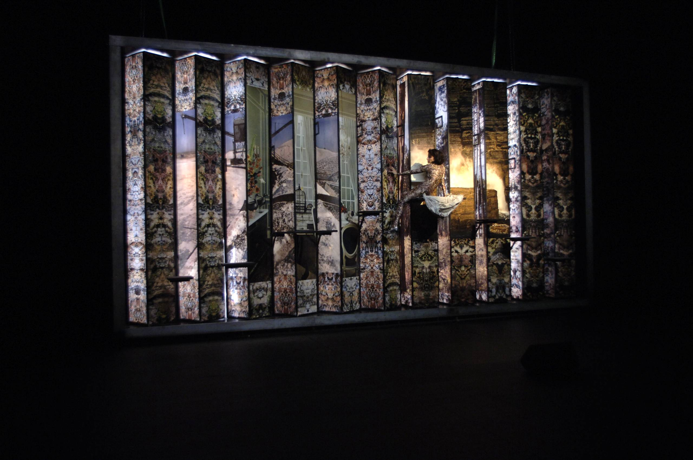
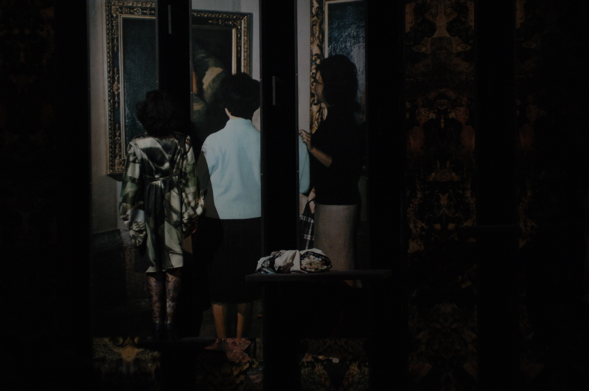
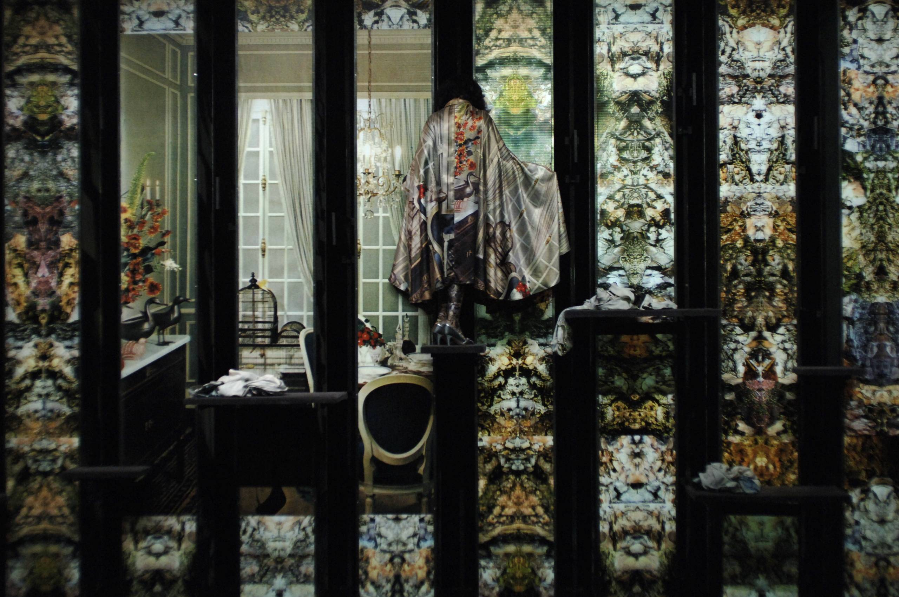

Up to date
2007




Dans Up to date, Claudia Triozzi entend poursuivre d’une part l’exploration des rapports de la voix et de l’image et d’autre part d’aborder la question des processus de mimétisme et d’illusion optique.
Le traitement de la voix est envisagé comme espace de déploiement et de manifestation concrète. Cette pièce traite l’exploration spontanée de l’émission vocale comme phénomène sonore, physique. Elle développe une recherche des sons harmoniques et bruitistes par l’écriture des textes et l’improvisation vocale des mélodies tout en passant par le travail du mouvement corporel et du souffle comme matière susceptible à produire et amplifier les sons ainsi qu’à l’adaptation de différents modes de diffusion sonore et de la parole. Prenant en partie appui sur une culture personnelle puisée dans le champ artistique italien issu de la tradition critique, qu’elle soit cinématographique avec Pasolini Che cosa sono le nuvole ? /Qu’est-ce que les nuages ? 1967 ou théâtrale avec Carmelo Bene (travail de l’acteur et de la voix comme site de l’excès), il est question dans Up to date d’engager différents régimes de disjonctions (corps/voix, personnages/corps anonymes, musique/instrument, présence/image), mettant à mal les logiques de perception qui sont habituellement les nôtres devant tout spectacle. Les gestes tout comme les dynamiques corporelles seront soumis à des traitements de différentes natures. Du marionnettique au tableau vivant, tous contribuent à mettre l’accent sur la puissance de crise qui gît au cœur de la corporéité du danseur/acteur/chanteur, dont la fonction opératoire menace à tout moment le cadre fictionnel de la représentation. Le mouvement, ici, est donc d’abord celui des corps, mais aussi, et tour à tour, celui du drame, de la rêverie, de la fatigue, de l’illusion et de la perte. Illusion de la perte, perte de l’illusion, drame de la fatigue, fatigue du drame, rêverie de la fiction recommencée — en corps et encore.
Les processus de mimétisme et des effets d’illusions optiques sont rendus possibles grâce à différents types de dispositifs techniques et scénographiques liés à la lumière. A partir de cette réflexion, Claudia Triozzi a créé un échange depuis plusieurs mois avec Jacques Ninio, directeur de recherche au laboratoire de physique statistique de l’Ecole Normale Supérieure, auteur d’un ouvrage intitulé la science des illusions.
La profondeur de champ due au dispositif scénographique avec tout ce qu’il représente d’ambiguë, de variable, de non maîtrisable voit les corps se mouvoir sur une surface qui est impression de lumière et paysage sur lequel les actes de cette comédie s’enchaînent.
Dans certain phénomène de mimétisme, on peut parler de coloration adaptative, une coloration (de l’animal, de l’être) qui s’adapte au fond pour se défendre de la lumière et ainsi se mettre à l’abri des faits, d’être vu, saisi. Comme fait, l’on peut songer à une série de scènes dont le caractère est sous la forme du mystère, catégorie qui désigne une manière de lier des éléments hétérogènes. Claudia Triozzi pense notamment au camouflage (dans la pratique militaire), faire de son corps un état de cailloux, un état de sable, un état de minéraux, etc. Tout cela peut se dire d’une physicalité qui fait tâche, volume, en se faisant à la fois figure et abstraction.
« Les régimes de confrontation ou de conjonction entre différents domaines de l’activité artistique informent
et irriguent les pratiques artistiques qui depuis longtemps m’intéressent le plus directement : celles qui
tiennent compte de la puissance de fiction qui travaille tout dispositif esthétique, lui permettant ainsi
d’interroger ses conditions de possibilité. La confrontation de différents régimes sensoriels et perceptifs, leur
cénesthésie, a toujours constitué une dimension importante de mon travail, au fil des projets. Aujourd’hui,
c’est encore cette puissance du dialogue des formes et des intensités (plastiques, gestuelles,
kinesthésiques, sonores, vocales, lumineuses, textuelles...) que j’entends mettre en œuvre à l’occasion de
cette nouvelle pièce. Et en resituant la présence humaine, visible et audible, au cœur de l’action scénique. »
Claudia Triozzi
Conception, interprétation, scénographie Claudia Triozzi
Musique Haco, Michel Guillet (électronique), Claudia Triozzi (voix et textes)
Costumes An Breugelmans
Conception technique/construction décor Christophe Boisson
Textures du décor Jacques Ninio
Lumière Yannick Fouassier
Régie Son Samuel Pajand
Régie Vidéo Romain Tanguy
Construction Damien Arrii
Manipulation machine Juliette Rudent